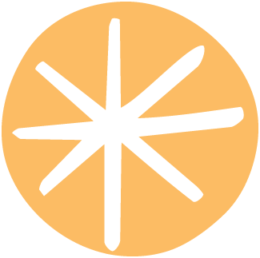

Welcome to Botanical Colour - Croeso i Lliw Botanegol
An archive exploring botanical colour, plant-based dyes, and material processes.
Archif sy’n archwilio lliw botanegol, llifynnau seiliedig ar blanhigion, a phrosesau deunyddiau
An archive exploring botanical colour, plant-based dyes, and material processes.
Archif sy’n archwilio lliw botanegol, llifynnau seiliedig ar blanhigion, a phrosesau deunyddiau
